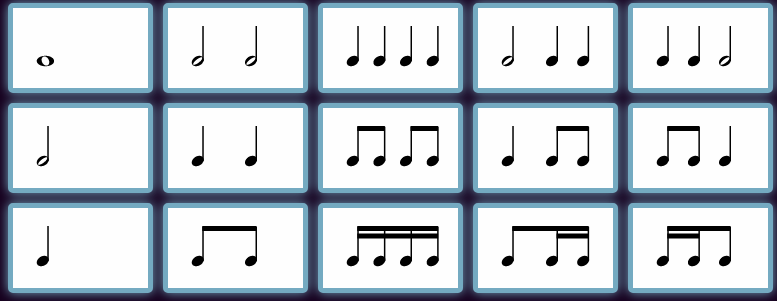

This app was developed based two core concepts I have about rhythm.
Listed below are the 15 rhythms for the three most common levels of subdivisions. I have listed them in what I consider a general spectrum of syncopation and starting with the non-rest rhythms.
The process is based on learning these rhythms in sequenced steps through the three most common levels of subdivision: quarters, eighths, and sixteenths. First we go through all levels learning only the non-rest rhythms. I find that for a young musician, the concept of a rest can be quite challenging and can greatly complicate learning rhythms. I believe it is important that students master the non-rest rhythms first and then gradually introduce the rhythms with rests.
At all levels, rhythms are introduced gradually and sequentially from least syncopated to most syncopated. This allows the students time to practice each new rhythm such that they can internalize and quickly identify them.
Once this base set of non-rest rhythms is learned, we incorporate the rhythms with rests. Again in gradual steps to allow for mastery. Upon completing all of the steps, students should be able to perform very complicated rhythms.
Copy and share the link below to share the current Rhythm Trainer settings